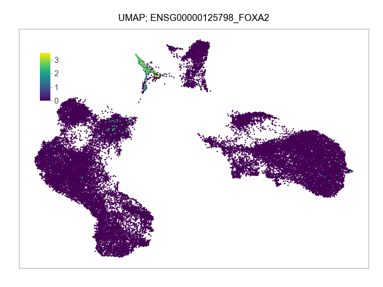

![]()
Sys.time()[1] "2023-02-25 17:04:52 CST"Sys.time()[1] "2023-02-25 17:04:52 CST"[1] "America/Chicago"import multiprocessing
import sys
sys.path.append("/Users/jialei/Dropbox/Data/Projects/UTSW/Scripts/utilities")
sys.path.append("/project/GCRB/Hon_lab/s166631/00.bin/utilities/")
from pathlib import Path
from random import sample
import harmonypy as hm
import matplotlib.pyplot as plt
import numpy as np
import pandas as pd
import phate
import scanpy as sc
import umap
from utilities import (
plot_embedding,
plot_pca_variance_explained,
plot_cluster_composition,
)params = {
"pdf.fonttype": 42,
"font.family": "sans-serif",
"font.sans-serif": "Arial",
"mathtext.default": "regular",
"figure.dpi": 96 * 1.5,
}
plt.rcParams.update(params)PROJECT_DIR = Path(
"/Users/jialei/Dropbox/Data/Projects/UTSW/Peri-implantation") / "raw"
SEED = 20210719
N_COMPONENTS = 100
MINIMAL_NUM_GENES_REQUIRED_FOR_CELL = 200
MINIMAL_NUM_CELLS_REQUIRED_FOR_GENE = 30
MINIMAL_NUM_COUNTS_REQUIRED_FOR_GENE = 60
MT_PERCENTAGE_CUTOFF = 0.2
N_THREADS = multiprocessing.cpu_count() - 1
N_SAMPLING = NoneThis study
libraries = ["LW186", "LW187", "LW188", "LW189", "LW202", "LW203", "LW204"]
adatas = [
sc.read_h5ad(filename=PROJECT_DIR / i / "matrix" / "adata.h5ad")
for i in libraries
]adatas = [
i[
i.obs["mt_percentage"] <= MT_PERCENTAGE_CUTOFF,
]
for i in adatas
]# merge adatas
adata = sc.concat(adatas, axis=0)print(f"Raw median UMIs per cell: {np.median(a=adata.X.sum(axis=1).A1):,}")
## Raw median UMIs per cell: 3,728.0
print(f"Number of cells before filtering: {adata.n_obs:,}")
## Number of cells before filtering: 39,755
print(f"Number of features before filtering: {adata.n_vars:,}")
## Number of features before filtering: 33,538
print(adata.obs["batch"].value_counts())
## LW186 10977
## LW204 7596
## LW188 6838
## LW202 4833
## LW187 3690
## LW189 3250
## LW203 2571
## Name: batch, dtype: int64# reorder cells
adata = adata[np.sort(adata.obs.index), :]
# filter cells
adata = adata[
(adata.X > 0).sum(axis=1).A1 >= MINIMAL_NUM_GENES_REQUIRED_FOR_CELL, :
]matrix_cpm_use = adata.X.transpose(copy=True)
features = adata.var_names# sample cells
if N_SAMPLING:
adata = adata[sample(list(adata.obs.index.values), N_SAMPLING), :]
print(f"Number of cells after sampling: {adata.n_obs:,}")
# filter features
row_idx = np.logical_and(
(adata.X > 0).sum(axis=0).A1 >= MINIMAL_NUM_CELLS_REQUIRED_FOR_GENE,
(adata.X).sum(axis=0).A1 >= MINIMAL_NUM_COUNTS_REQUIRED_FOR_GENE,
)
adata = adata[:, row_idx]print(f"Median UMIs per cell: {np.median(a=adata.X.sum(axis=1).A1):,}")
## Median UMIs per cell: 3,725.0
print(f"Number of cells after filtering: {adata.n_obs:,}")
## Number of cells after filtering: 39,755
print(f"Number of features after filtering: {adata.n_vars:,}")
## Number of features after filtering: 16,037# normalize
sc.pp.normalize_total(
adata=adata,
target_sum=np.median(a=adata.X.sum(axis=1).A1),
exclude_highly_expressed=False,
)/Users/jialei/.pyenv/versions/mambaforge-22.9.0-3/lib/python3.10/site-packages/scanpy/preprocessing/_normalization.py:138: UserWarning: Revieved a view of an AnnData. Making a copy.
view_to_actual(adata)
/Users/jialei/.pyenv/versions/mambaforge-22.9.0-3/lib/python3.10/site-packages/scanpy/preprocessing/_normalization.py:138: FutureWarning: X.dtype being converted to np.float32 from int64. In the next version of anndata (0.9) conversion will not be automatic. Pass dtype explicitly to avoid this warning. Pass `AnnData(X, dtype=X.dtype, ...)` to get the future behavour.
view_to_actual(adata)# logarithmize
sc.pp.log1p(adata)# detect hvgs
if HVG:
sc.pp.highly_variable_genes(
adata,
min_mean=0.0125,
max_mean=3,
min_disp=0.5,
flavor="seurat",
batch_key="batch",
)
# standardize/Users/jialei/.pyenv/versions/mambaforge-22.9.0-3/lib/python3.10/site-packages/scanpy/preprocessing/_highly_variable_genes.py:475: FutureWarning: The frame.append method is deprecated and will be removed from pandas in a future version. Use pandas.concat instead.
hvg = hvg.append(missing_hvg, ignore_index=True)
/Users/jialei/.pyenv/versions/mambaforge-22.9.0-3/lib/python3.10/site-packages/scanpy/preprocessing/_highly_variable_genes.py:475: FutureWarning: The frame.append method is deprecated and will be removed from pandas in a future version. Use pandas.concat instead.
hvg = hvg.append(missing_hvg, ignore_index=True)
/Users/jialei/.pyenv/versions/mambaforge-22.9.0-3/lib/python3.10/site-packages/scanpy/preprocessing/_highly_variable_genes.py:475: FutureWarning: The frame.append method is deprecated and will be removed from pandas in a future version. Use pandas.concat instead.
hvg = hvg.append(missing_hvg, ignore_index=True)
/Users/jialei/.pyenv/versions/mambaforge-22.9.0-3/lib/python3.10/site-packages/scanpy/preprocessing/_highly_variable_genes.py:475: FutureWarning: The frame.append method is deprecated and will be removed from pandas in a future version. Use pandas.concat instead.
hvg = hvg.append(missing_hvg, ignore_index=True)
/Users/jialei/.pyenv/versions/mambaforge-22.9.0-3/lib/python3.10/site-packages/scanpy/preprocessing/_highly_variable_genes.py:475: FutureWarning: The frame.append method is deprecated and will be removed from pandas in a future version. Use pandas.concat instead.
hvg = hvg.append(missing_hvg, ignore_index=True)
/Users/jialei/.pyenv/versions/mambaforge-22.9.0-3/lib/python3.10/site-packages/scanpy/preprocessing/_highly_variable_genes.py:475: FutureWarning: The frame.append method is deprecated and will be removed from pandas in a future version. Use pandas.concat instead.
hvg = hvg.append(missing_hvg, ignore_index=True)
/Users/jialei/.pyenv/versions/mambaforge-22.9.0-3/lib/python3.10/site-packages/scanpy/preprocessing/_highly_variable_genes.py:475: FutureWarning: The frame.append method is deprecated and will be removed from pandas in a future version. Use pandas.concat instead.
hvg = hvg.append(missing_hvg, ignore_index=True)sc.pp.scale(
adata,
zero_center=ZERO_CENTER,
max_value=None,
copy=False,
layer=None,
obsm=None,
)sc.tl.pca(
adata,
n_comps=N_COMPONENTS,
zero_center=ZERO_CENTER,
svd_solver="arpack",
random_state=SEED,
return_info=False,
use_highly_variable=HVG,
dtype="float64",
copy=False,
chunked=False,
)
principal_components = adata.obsm["X_pca"]with plt.style.context("ggplot"):
fig, ax = plt.subplots(nrows=1, ncols=1, figsize=(5, 2.5))
plot_pca_variance_explained(
x=adata.uns["pca"]["variance_ratio"],
num_pcs=30,
ax=ax,
)
ax.set(ylim=(-0.0025, max(ax.get_ylim())))
plt.tight_layout()
plt.show()
plt.close(fig=fig)<AxesSubplot: xlabel='Principal component', ylabel='Explained variance ratio'>
[(-0.0025, 0.049999999999999996)]# remove batch effect
batches = adata.obs["batch"].values
print(adata.obs["batch"].value_counts())LW186 10977
LW204 7596
LW188 6838
LW202 4833
LW187 3690
LW189 3250
LW203 2571
Name: batch, dtype: int64if len(set(batches)) > 1:
ho = hm.run_harmony(
data_mat=principal_components,
meta_data=pd.DataFrame(
{"batch": batches}, index=adata.obs.index.values
),
vars_use="batch",
random_state=SEED,
)
principal_components_selected = ho.Z_corr.T.astype(np.float64)
else:
principal_components_selected = principal_components.astype(np.float64)2023-02-25 17:05:41,697 - harmonypy - INFO - Iteration 1 of 10
2023-02-25 17:05:48,968 - harmonypy - INFO - Iteration 2 of 10
2023-02-25 17:05:56,651 - harmonypy - INFO - Converged after 2 iterationsprincipal_components_use = principal_components_selected[:, range(28)]embedding_umap = umap.UMAP(
n_neighbors=15,
n_components=2,
metric="euclidean",
min_dist=0.1,
spread=1.0,
random_state=SEED,
transform_seed=42,
verbose=True,
).fit_transform(principal_components_use)UMAP(random_state=20210719, verbose=True)
Sat Feb 25 17:05:58 2023 Construct fuzzy simplicial set
Sat Feb 25 17:05:58 2023 Finding Nearest Neighbors
Sat Feb 25 17:05:58 2023 Building RP forest with 15 trees
Sat Feb 25 17:05:58 2023 NN descent for 15 iterations
1 / 15
2 / 15
3 / 15
4 / 15
Stopping threshold met -- exiting after 4 iterations
Sat Feb 25 17:06:05 2023 Finished Nearest Neighbor Search
Sat Feb 25 17:06:06 2023 Construct embedding
Sat Feb 25 17:06:21 2023 Finished embedding
Epochs completed: 0%| 0/200 [00:00]
Epochs completed: 0%| 1/200 [00:00]
Epochs completed: 2%| 2 4/200 [00:00]
Epochs completed: 3%| 3 6/200 [00:00]
Epochs completed: 4%| 4 8/200 [00:00]
Epochs completed: 5%| 5 10/200 [00:00]
Epochs completed: 6%| 6 12/200 [00:00]
Epochs completed: 7%| 7 14/200 [00:01]
Epochs completed: 8%| 8 16/200 [00:01]
Epochs completed: 9%| 9 18/200 [00:01]
Epochs completed: 10%| # 20/200 [00:01]
Epochs completed: 11%| #1 22/200 [00:01]
Epochs completed: 12%| #2 24/200 [00:01]
Epochs completed: 13%| #3 26/200 [00:01]
Epochs completed: 14%| #4 28/200 [00:02]
Epochs completed: 15%| #5 30/200 [00:02]
Epochs completed: 16%| #6 32/200 [00:02]
Epochs completed: 17%| #7 34/200 [00:02]
Epochs completed: 18%| #8 36/200 [00:02]
Epochs completed: 19%| #9 38/200 [00:02]
Epochs completed: 20%| ## 40/200 [00:02]
Epochs completed: 21%| ##1 42/200 [00:03]
Epochs completed: 22%| ##2 44/200 [00:03]
Epochs completed: 23%| ##3 46/200 [00:03]
Epochs completed: 24%| ##4 48/200 [00:03]
Epochs completed: 25%| ##5 50/200 [00:03]
Epochs completed: 26%| ##6 52/200 [00:03]
Epochs completed: 27%| ##7 54/200 [00:03]
Epochs completed: 28%| ##8 56/200 [00:04]
Epochs completed: 29%| ##9 58/200 [00:04]
Epochs completed: 30%| ### 60/200 [00:04]
Epochs completed: 31%| ###1 62/200 [00:04]
Epochs completed: 32%| ###2 64/200 [00:04]
Epochs completed: 33%| ###3 66/200 [00:04]
Epochs completed: 34%| ###4 68/200 [00:04]
Epochs completed: 35%| ###5 70/200 [00:05]
Epochs completed: 36%| ###6 72/200 [00:05]
Epochs completed: 37%| ###7 74/200 [00:05]
Epochs completed: 38%| ###8 76/200 [00:05]
Epochs completed: 39%| ###9 78/200 [00:05]
Epochs completed: 40%| #### 80/200 [00:05]
Epochs completed: 41%| ####1 82/200 [00:05]
Epochs completed: 42%| ####2 84/200 [00:06]
Epochs completed: 43%| ####3 86/200 [00:06]
Epochs completed: 44%| ####4 88/200 [00:06]
Epochs completed: 45%| ####5 90/200 [00:06]
Epochs completed: 46%| ####6 92/200 [00:06]
Epochs completed: 47%| ####6 94/200 [00:06]
Epochs completed: 48%| ####8 96/200 [00:07]
Epochs completed: 49%| ####9 98/200 [00:07]
Epochs completed: 50%| ##### 100/200 [00:07]
Epochs completed: 51%| #####1 102/200 [00:07]
Epochs completed: 52%| #####2 104/200 [00:07]
Epochs completed: 53%| #####3 106/200 [00:07]
Epochs completed: 54%| #####4 108/200 [00:07]
Epochs completed: 55%| #####5 110/200 [00:08]
Epochs completed: 56%| #####6 112/200 [00:08]
Epochs completed: 57%| #####6 114/200 [00:08]
Epochs completed: 58%| #####8 116/200 [00:08]
Epochs completed: 59%| #####8 118/200 [00:08]
Epochs completed: 60%| ###### 120/200 [00:08]
Epochs completed: 61%| ######1 122/200 [00:08]
Epochs completed: 62%| ######2 124/200 [00:09]
Epochs completed: 63%| ######3 126/200 [00:09]
Epochs completed: 64%| ######4 128/200 [00:09]
Epochs completed: 65%| ######5 130/200 [00:09]
Epochs completed: 66%| ######6 132/200 [00:09]
Epochs completed: 67%| ######7 134/200 [00:09]
Epochs completed: 68%| ######8 136/200 [00:09]
Epochs completed: 69%| ######9 138/200 [00:10]
Epochs completed: 70%| ####### 140/200 [00:10]
Epochs completed: 71%| #######1 142/200 [00:10]
Epochs completed: 72%| #######2 144/200 [00:10]
Epochs completed: 73%| #######3 146/200 [00:10]
Epochs completed: 74%| #######4 148/200 [00:10]
Epochs completed: 75%| #######5 150/200 [00:10]
Epochs completed: 76%| #######6 152/200 [00:11]
Epochs completed: 77%| #######7 154/200 [00:11]
Epochs completed: 78%| #######8 156/200 [00:11]
Epochs completed: 79%| #######9 158/200 [00:11]
Epochs completed: 80%| ######## 160/200 [00:11]
Epochs completed: 81%| ########1 162/200 [00:11]
Epochs completed: 82%| ########2 164/200 [00:11]
Epochs completed: 83%| ########2 166/200 [00:12]
Epochs completed: 84%| ########4 168/200 [00:12]
Epochs completed: 85%| ########5 170/200 [00:12]
Epochs completed: 86%| ########6 172/200 [00:12]
Epochs completed: 87%| ########7 174/200 [00:12]
Epochs completed: 88%| ########8 176/200 [00:12]
Epochs completed: 89%| ########9 178/200 [00:12]
Epochs completed: 90%| ######### 180/200 [00:13]
Epochs completed: 91%| #########1 182/200 [00:13]
Epochs completed: 92%| #########2 184/200 [00:13]
Epochs completed: 93%| #########3 186/200 [00:13]
Epochs completed: 94%| #########3 188/200 [00:13]
Epochs completed: 95%| #########5 190/200 [00:13]
Epochs completed: 96%| #########6 192/200 [00:13]
Epochs completed: 97%| #########7 194/200 [00:14]
Epochs completed: 98%| #########8 196/200 [00:14]
Epochs completed: 99%| #########9 198/200 [00:14]
Epochs completed: 100%| ########## 200/200 [00:14]
Epochs completed: 100%| ########## 200/200 [00:14]adata = sc.AnnData(
X=principal_components_use,
obs={"cell": adata.obs.index.values, "batch": batches},
dtype="float64",
)
adata.obs.index = adata.obs["cell"]
sc.pp.neighbors(
adata=adata,
n_neighbors=30,
n_pcs=0,
use_rep=None,
knn=True,
random_state=SEED,
method="umap",
metric="euclidean",
copy=False,
)
sc.tl.leiden(
adata=adata,
resolution=1,
random_state=SEED,
key_added="leiden",
directed=True,
use_weights=True,
partition_type=None,
copy=False,
)embedding = pd.DataFrame(
data=np.concatenate(
(adata.obs[["batch", "leiden"]], embedding_umap),
axis=1,
),
index=adata.obs["cell"],
columns=["batch", "leiden", "x_umap_min_dist=0.1", "y_umap_min_dist=0.1"],
)
embedding = embedding.astype(
{
"leiden": int,
"x_umap_min_dist=0.1": float,
"y_umap_min_dist=0.1": float,
}
)fig, ax = plt.subplots(nrows=1 * 1, ncols=1, figsize=(4 * 1, 3 * 1))
plot_embedding(
embedding=embedding.loc[:, ["x_umap_min_dist=0.1", "y_umap_min_dist=0.1"]],
ax=ax,
color_values=[str(i) for i in embedding["leiden"]],
title="UMAP; Leiden",
show_color_value_labels=True,
rasterise=True,
)
plt.tight_layout()
plt.show()plt.close(fig=fig)embedding.groupby(by="batch").size().to_frame(name="num_cells") num_cells
batch
LW186 10977
LW187 3690
LW188 6838
LW189 3250
LW202 4833
LW203 2571
LW204 7596
cluster_composition = (
(
embedding.groupby(by="leiden").aggregate("batch").value_counts()
/ embedding.groupby(by="leiden").aggregate("batch").size()
)
.to_frame(name="percentage")
.reset_index()
)
cluster_composition = cluster_composition.astype({"leiden": str})
clusters_selected = list(
np.sort(embedding["leiden"].unique()).astype(dtype=str)[::-1]
)
batches_selected = list(embedding["batch"].unique())
cluster_composition = cluster_composition.astype(
{
"leiden": pd.api.types.CategoricalDtype(
categories=clusters_selected, ordered=True
),
"batch": pd.api.types.CategoricalDtype(
categories=batches_selected, ordered=True
),
}
)fig, ax = plt.subplots(nrows=1, ncols=1, figsize=(4.5, 4))
plot_cluster_composition(
cluster_composition=cluster_composition,
x="batch",
y="leiden",
ax=ax,
x_order=batches_selected,
y_order=clusters_selected,
)
plt.tight_layout()
plt.show()plt.close(fig=fig)matrix_cpm_use.data = (
1_000_000
* matrix_cpm_use.data
/ np.repeat(matrix_cpm_use.sum(axis=0).A1, np.diff(matrix_cpm_use.indptr))
)FEATURES_SELECTED = [
"ENSG00000204531_POU5F1",
"ENSG00000203909_DPPA5",
"ENSG00000184344_GDF3",
"ENSG00000156574_NODAL",
"ENSG00000111704_NANOG",
"ENSG00000075388_FGF4",
#
"ENSG00000164736_SOX17",
"ENSG00000125798_FOXA2",
"ENSG00000136574_GATA4",
"ENSG00000141448_GATA6",
"ENSG00000134853_PDGFRA",
"ENSG00000115414_FN1",
#
"ENSG00000107485_GATA3",
"ENSG00000118777_ABCG2",
"ENSG00000165556_CDX2",
"ENSG00000137869_CYP19A1",
"ENSG00000172818_OVOL1",
"ENSG00000126353_CCR7"
]for selected_feature in FEATURES_SELECTED:
print(selected_feature)
idx = np.where([i == selected_feature for i in features])[0]
values = matrix_cpm_use[idx, :].toarray().flatten()
values = np.log10(values + 1)
fig, ax = plt.subplots(nrows=1 * 1, ncols=1, figsize=(4 * 1, 3 * 1))
p = plot_embedding(
embedding=embedding.loc[
adata.obs.index, ["x_umap_min_dist=0.1", "y_umap_min_dist=0.1"]
],
ax=ax,
color_values=values,
title=f"UMAP; {selected_feature}",
show_color_value_labels=False,
marker_size=4,
sort_values=True,
)
ax_ins = ax.inset_axes((0.06, 0.70, 0.03, 0.2))
cbar = fig.colorbar(
mappable=p,
cax=ax_ins,
orientation="vertical",
label="",
ticks=range(np.ceil(max(values)).astype(int)),
)
cbar.outline.set_linewidth(w=0.2)
cbar.outline.set_visible(b=False)
ax_ins.tick_params(
axis="y",
direction="out",
length=1.5,
width=0.2,
color="#333333",
pad=1.25,
labelsize=6,
labelcolor="#4D4D4D",
)
plt.tight_layout()
plt.show()
plt.close(fig=fig)ENSG00000204531_POU5F1
ENSG00000203909_DPPA5
ENSG00000184344_GDF3
ENSG00000156574_NODAL
ENSG00000111704_NANOG
ENSG00000075388_FGF4
ENSG00000164736_SOX17
ENSG00000125798_FOXA2
ENSG00000136574_GATA4
ENSG00000141448_GATA6
ENSG00000134853_PDGFRA
ENSG00000115414_FN1
ENSG00000107485_GATA3
ENSG00000118777_ABCG2
ENSG00000165556_CDX2
ENSG00000137869_CYP19A1
ENSG00000172818_OVOL1
ENSG00000126353_CCR7